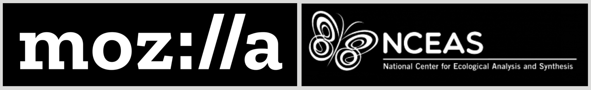

![A diagram of the Openscapes flywheel. The Openscapes logo sits in the center of a cyclical process. The text around the logo reads as follows: 'Welcome bright spots (be they mentors or researchers) -- people who want to work better and collaborate' > 'Create space and place to connect and collaborate; remove barriers to participation (paid time, part of jobs)' > 'Invest in learning and trust; Everyone has something to learn, ask, teach; don't need to be an expert in everything. Cultivate psychological safety, growth mindset. Slowing down to speed up.' > 'Work Openly; Put what you learn into practice quickly, role-modeing sharing imperfect work and identifying common challenges and opportunities. Openness is a spectrum; first Future You and then Future Us' > Leverage common workflows, skills, tools; This is where we speed up: Iterate, reuse, remix with each other and teh broader community' > 'Inspire broader scientific communities through visible examples and leaders -- Open science shift' > repeat. These six steps are summarized by three overarching goals, which are also written around the logo: 'Engage a future us mindset', 'Empower learning culture', and 'Amplify open leaders'.](images/diagrams/openscapes-by-the-numbers-v2023.06.png)

Openscapes is an approach and a movement that helps researchers and those supporting research find each other and feel empowered to conduct data-intensive science by providing structure for technical skill-building, collaborative teamwork, and inclusive community development. Here’s how:
ENGAGE
We welcome and create space and place. We engage researchers who want to work better and collaborate through empathy, art, storytelling, and technology.
EMPOWER
We invest in learning and trust, and work openly. We empower researchers by growing their confidence and abilities as they put what they learn into practice quickly.
AMPLIFY
We leverage common workflows and inspire broader shifts. We amplify progress through collaboration and reuse, celebrating people and small wins that accumulate.
As part of the larger open science movement, we help research teams and organizations reimagine data-intensive science as a collaborative effort, develop modern skills that are of immediate value to them, and cultivate collaborative and inclusive research communities.
TODO: Quotes look less like text and more like speech bubbles. Litely boxed, with faces
“Openscapes has created a collaborative environment for DAAC staff to collectively support open science initiatives for NASA Earthdata users. We’ve developed awesome material to help Earthdata users. Perhaps just as important as what we’ve done however, are mindsets we’ve grown into along the way. It’s okay to share imperfect works in progress. We are better at dreaming and implementing the future together.”
– Cassandra Nickles, NASA Physical Oceanography Distributed Active Archive Center (DAAC)
“As fisheries scientists, we know that when we’re in rough seas, it’s important to keep the ship afloat AND get out of the storm. Openscapes helps teams steer out of the storm of email chains with 37 versions of the same spreadsheet and to the calmer waters of open science and meaningful collaboration, using tools like R.”
- Adyan Rios, NOAA Southeast Fisheries Science Center
“Because of Openscapes, I have renewed hope in how we can bring about a kinder future in science. I see a commitment in the open science community to bridging the gaps where we’ve left members of our community behind, and it inspires me.”
- Ileana Fenwick, University of North Carolina
“Openscapes isn’t just about coding and GitHub, it’s about changing how we do science”
- Dr. Malin Pinsky, University of California Santa Cruz
Blog posts share stories from the Openscapes community as well as document our learning openly. See our most recent posts below or browse our full blog listing).
Openscapes bridges data-intensive environmental science with the open movement. Learn more about us.

Our vision is a scientific culture that is more efficient and collaborative, and can uncover environmental solutions faster together.
Openscapes
California, USA
hello @ openscapes.org
Twitter & GitHub: @openscapes